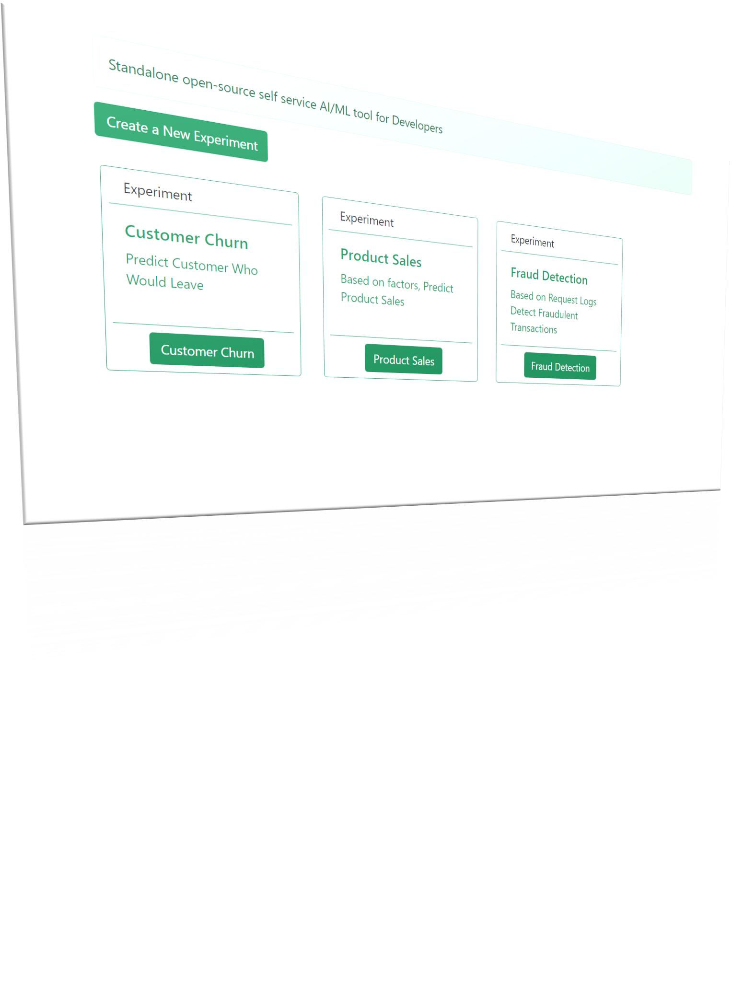

RestifyML - Give your Developers AI/ML Super Powers
Open-Source AI/ML Tool for Developers to quickly experiment with data and generate AI/ML REST API to consume back into their application


Open-Source AI/ML Tool for Developers to quickly experiment with data and generate AI/ML REST API to consume back into their application
RestifyML requires no prior knowledge of complex Data Science expertise. Anyone with curiosity can create Ai/ML models and generate REST APIs to consume back directly into their application.
RestifyML is completely Free and Open-Source ( MIT ) and self-hosted. We intend to provide consulting and support on top of RestifyML wherever required.
We will continue to grow RestifyML with new functionality, add more AI/ML algorithms. Provide more documentation and Auto ML capabilites.
You could bring your own models and extend functionality and scalability by plugging in your cloud.
In case you need something custom or need support and improvement give us a shout at hello@rebataur.com